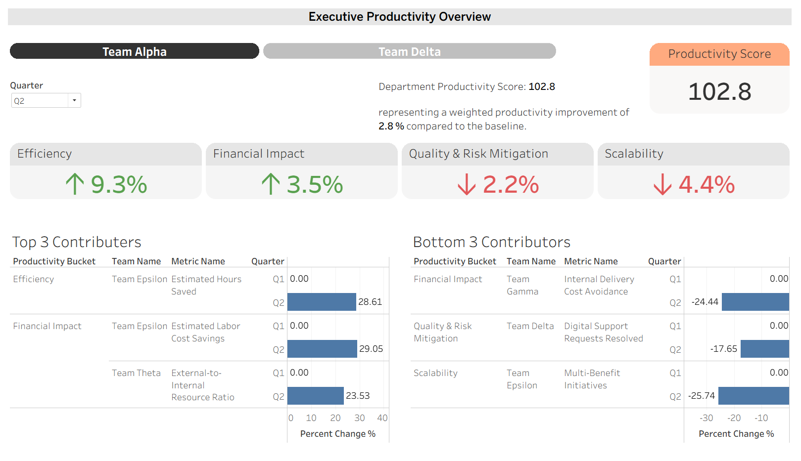
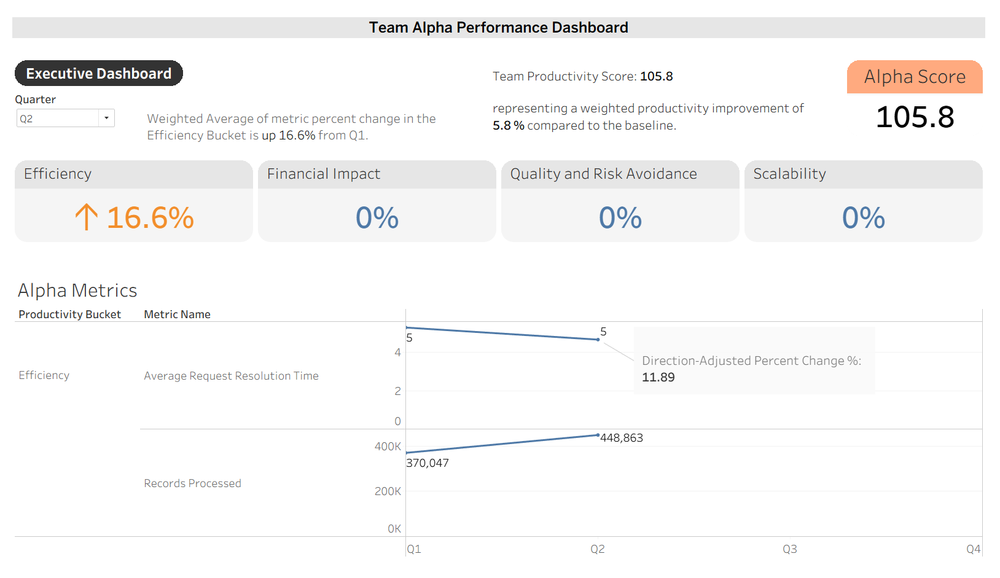

The challenge
Every team created value differently. Leadership needed a fair way to compare productivity without reducing it to speed alone or forcing unrelated work into the same metric.
FEATURED CASE STUDY · TABLEAU · KPI STRATEGY
I designed a department-wide productivity measurement framework and Tableau reporting experience that translates different forms of team value into a consistent, leadership-ready view of performance.
Every team created value differently. Leadership needed a fair way to compare productivity without reducing it to speed alone or forcing unrelated work into the same metric.
I led metric definition, stakeholder requirements, scoring logic, data preparation, dashboard development, testing, documentation, and the design of the executive and team-level reporting experience.
I created a weighted productivity index across four pillars—Efficiency, Financial Impact, Quality & Risk Mitigation, and Scalability—with drill-down views for team and metric-level analysis.
EXECUTIVE EXPERIENCE
The executive dashboard combines a weighted productivity score with pillar-level movement and ranked contributors, helping leaders see both the headline and the underlying story.

PRODUCTIVITY SCORE
The score normalizes quarterly change, accounts for whether increases or decreases represent improvement, and applies leadership-defined weights across the productivity pillars.
CONTRIBUTOR ANALYSIS
Top and bottom contributor views surface the metrics creating the largest positive or negative movement, helping leadership focus follow-up conversations.
BUSINESS LANGUAGE
Plain-language statements explain score movement against the baseline so non-technical users can interpret the result without reverse-engineering the calculation.
QUARTERLY REPORTING
The framework supports structured quarterly metric intake, consistent classifications, baseline comparisons, and a reusable reporting process across teams.
TEAM DRILL-DOWN
The team dashboard keeps the same scoring language while revealing metric-level trends, values, and direction-adjusted change for deeper analysis.

HOW I BUILT IT
BUSINESS VALUE
Portfolio note: The dashboard images shown here use fictional names, generalized metrics, and dummy values. The underlying design decisions, scoring framework, calculation approach, and development work are representative of the solution I built.
NEXT PROJECT